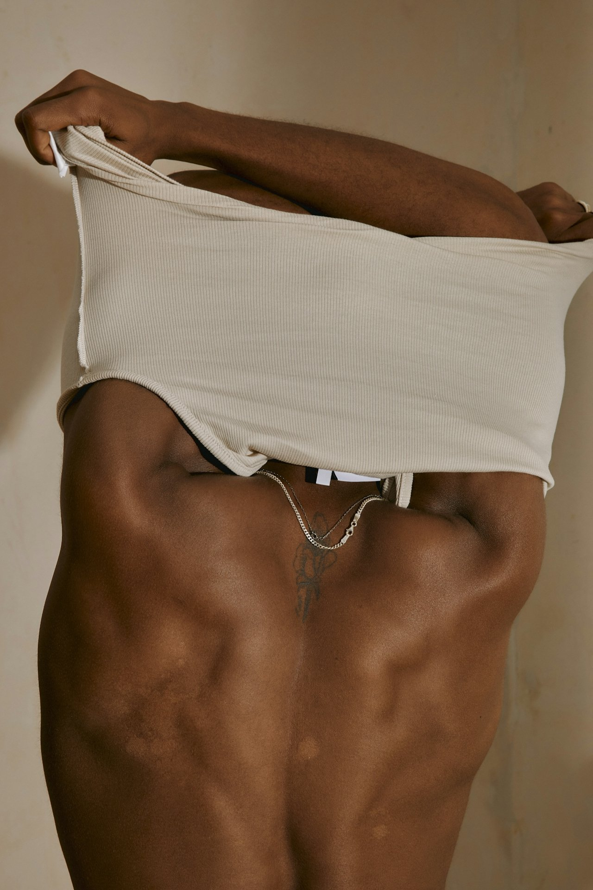

Skincare for Melanin is Just Bad Marketing

Hadiyah Daché, licensed cosmetologist & esthetician
Skin Care Scams
7 min
← All articlesThe Book →Friendly reminder: this post contains affiliate links, which help support the Glowdega Archive. If you buy through them, I may earn a commission at no extra cost to you.
There’s something sinister happening in skin care right now. In recent years, the beauty industry has embraced terminology like "melanin-rich" and "skincare for melanin" in their marketing efforts. While it's refreshing to see more inclusive product development, this language often unintentionally reinforces the misconception that melanin is exclusive to darker skin tones. It’s murky marketing and it’s not helpful.
Walk through any beauty retailer or scroll through online shops, and you'll find products marketed specifically for "melanin-rich skin"—as if melanin were an exclusive compound found only in some people rather than a universal human pigment. These marketing approaches, while well-intentioned in their effort to address previously underserved consumers, sometimes perpetuate scientific inaccuracies.
What's particularly ironic is that many products marketed as "for melanin" are actually addressing concerns related to higher melanin production—like hyperpigmentation, uneven skin tone, or dark spots. Yet everyone experiences these issues to some degree, regardless of overall melanin levels. A fair-skinned person with sun damage experiences the exact same melanin-based process as someone with darker skin who has post-inflammatory hyperpigmentation.
The marketing disconnect goes something like this:
Products for lighter skin: Described by their function ("brightening," "spot-reducing")
Products for darker skin: Described by the biological component ("melanin-balancing," "for melanin-rich skin")
This separation creates an artificial divide, implying that different skin tones operate on completely different biological systems rather than the same mechanisms with varying levels of activity.
The Science of Melanin
Melanin is one of the most misunderstood biological components in human physiology. A common misconception is that melanin is exclusive to people with darker skin tones, particularly those of African descent. However, this understanding is fundamentally incorrect. Melanin is a natural pigment that exists in virtually all humans, regardless of race or ethnicity.
Melanin is a complex polymer produced by specialized cells called melanocytes. These cells are found in the basal layer of our epidermis, the outermost layer of skin. We all have approximately the same number of melanocytes in our skin regardless of racial background. The primary difference lies in the melanocytes' activity and the amount and type of melanin they produce. So, technically, we’re all “melanin-rich”.
There are actually several types of melanin found in humans:
Eumelanin is responsible for brown and black pigmentation. It appears in two forms—brown eumelanin and black eumelanin—which combine in different ratios to create various brown shades in skin and hair.
Pheomelanin produces reddish and yellowish pigments and is more prominent in people with red hair and freckles.
Neuromelanin is found in specific parts of the brain, such as the substantia nigra. (Just wanted to share this fun fact since we’re covering melanin but the rest of this post will focus on Eumelanin and Pheomelanin.)
The presence of these melanin types varies from person to person, creating the vast spectrum of human coloration we see around the world. At the molecular level, both types of melanin in the skin start from the same building block—an amino acid called tyrosine. The path they take from there determines what color they'll become.
Eumelanin: The Brown-Black Pigment
Eumelanin forms through a complex series of chemical reactions. This five-step process begins with the enzyme tyrosinase converting tyrosine to DOPA (dihydroxyphenylalanine) and then to dopaquinone. Then the dopaquinone undergoes cyclization to form cyclodopa. Next, cyclodopa oxidizes to form dopachrome. Dopachrome then transforms into either 5,6-dihydroxyindole (DHI) or 5,6-dihydroxyindole-2-carboxylic acid (DHICA). Lastly, these molecules polymerize (join together in chains) to form eumelanin.
The resulting eumelanin has a unique molecular structure that absorbs across almost the entire visible light spectrum. This broad absorption is why eumelanin appears brown to black—it's absorbing most wavelengths of light rather than reflecting them back to our eyes.
Interestingly, eumelanin exists in two forms: Black eumelanin (made predominantly from DHI) and Brown eumelanin (containing more DHICA). The ratio between these two forms contributes to the various shades of brown and black we see in human coloration.
Pheomelanin: The Red-Yellow Pigment
Pheomelanin formation takes a different path. The process starts the same way, with tyrosinase converting tyrosine to dopaquinone. However, before dopaquinone can continue down the eumelanin pathway, it reacts with cysteine (another amino acid containing sulfur). This creates cysteinyl-dopa compounds. These compounds then oxidize and polymerize to form pheomelanin.
The key difference is the incorporation of sulfur atoms from cysteine. This changes the molecular structure dramatically, resulting in a pigment that predominantly absorbs shorter (blue-green) wavelengths while reflecting longer (yellow-red) wavelengths. This selective absorption/reflection pattern is why pheomelanin appears yellowish-red.
The sulfur content also makes pheomelanin less effective at absorbing UV radiation compared to eumelanin, which is why people with higher pheomelanin ratios (like those with red hair) often burn more easily in the sun.
Our “Color” is Determined by Melanin Expression
The incredible diversity of human coloration comes from several factors:
Ratio of pigments: Most people produce both types of melanin, just in different ratios. Someone with auburn hair, for example, has a mix of eumelanin and pheomelanin.
Melanin concentration: The overall amount of melanin produced affects color intensity.
Particle size and distribution: Melanin forms tiny granules called melanosomes. Their size, density, and distribution pattern affect how light interacts with them.
Genetic regulation: Genes like MC1R (melanocortin 1 receptor) act as switches that help determine whether melanocytes produce more eumelanin or pheomelanin. Variations in these genes create different pigmentation patterns.
This complex interplay of biochemical pathways, genetic regulation, and physical properties of pigment granules creates the remarkable spectrum of human coloration we see across the world.
Even the palest human skin contains some melanin. Without it, a person would have albinism, a condition characterized by the absence or severe reduction of melanin due to genetic factors affecting melanin production. People with albinism can occur in any racial group, further demonstrating that melanin production exists across all human populations but can be affected by genetic variations.
The Evolutionary Purpose of Melanin
Melanin serves several crucial biological functions beyond determining appearance. Its primary role is photoprotection—shielding our skin from harmful ultraviolet (UV) radiation. Melanin absorbs UV radiation and dissipates over 99.9% of absorbed UV radiation as heat, preventing DNA damage that could lead to skin cancer.
This protective function explains the evolutionary adaptations in melanin production across different geographic regions. Populations native to regions with higher UV exposure typically developed higher melanin production capabilities, while those in areas with less sunlight evolved to produce less melanin to allow for sufficient vitamin D synthesis, which requires some UV exposure. Our ancestors didn't have SPF 50—they had genetic adaptations instead.
Melanin itself also acts as an antioxidant, neutralizing harmful free radicals generated by UV exposure that could otherwise damage DNA and cellular components.
The role of melanin in immune function is subtle but important. Melanin can act as a microbial defense mechanism by binding to pathogens and toxins, limiting their activity. It can modulate the inflammatory response, potentially helping to prevent excessive inflammation while maintaining appropriate immune reactions. And melanin also plays a crucial role in wound healing. Melanocytes are involved in wound healing processes, with melanin potentially playing a role in tissue repair and remodeling.
Far from being just a pigment, melanin is a multifunctional biological molecule central to numerous aspects of human physiology.
When Melanin Goes Missing: Skin Conditions Affecting Pigmentation
Albinism: The Complete Melanin Vacation
Albinism occurs when genetic mutations interfere with the body's ability to produce or distribute melanin. People with albinism have very little or no melanin, resulting in pale skin, light hair, and often vision problems (since melanin plays a role in eye development too). Contrary to popular belief, albinism affects people of all ethnicities worldwide—another proof that melanin is universal.
Vitiligo: Melanin's Disappearing Act
If you've ever seen patches of completely depigmented skin on someone, that's likely vitiligo—a condition where the immune system mistakenly attacks and destroys melanocytes. Affecting about 1-2% of the global population regardless of skin color, vitiligo can be particularly psychologically impactful because of the stark contrast it creates, especially on darker skin.
When Michael Jackson developed vitiligo, the resulting treatment and depigmentation led to dramatic changes in his appearance that fueled misconceptions about skin color and race for years. It also brought up rumors of skin bleaching which is another can of worms altogether.
Hypopigmentation: When Melanin Takes a Break
Various conditions can cause hypopigmentation—a reduction in melanin in certain areas. This includes:
Pityriasis alba: Common in children, causing light patches especially on the face
Post-inflammatory hypopigmentation: After skin injuries, burns, or infections
Tinea versicolor: A fungal infection that interferes with normal melanin production
TL;DR We ALL Have Melanin
Every human walking this planet has melanin—from the fairest Scandinavian to the darkest-skinned individuals from equatorial regions. The difference is merely quantitative, not qualitative. It's like saying some people have height while others don't—in reality, everyone has height; some just have more of it than others.
Understanding melanin helps us see human diversity through the lens of adaptation rather than division. Our varying shades represent our ancestors' ingenious solutions to environmental challenges, passed down through generations. Behind our rainbow of human colors lies the same biochemical process—just dialed to different settings.
More scientifically accurate marketing might acknowledge that all skincare is, in some way, "melanin care" — whether you're trying to prevent sun damage (protecting against melanin overproduction), fade dark spots (addressing concentrated melanin deposits), or maintain even skin tone (regulating melanin distribution).
Some emerging brands are taking a more nuanced approach, creating products formulated for specific skin concerns while acknowledging these issues exist across the spectrum of skin tones, just with different presentations. This approach not only aligns better with the science but also helps bridge divides in how we understand our shared biology.
Next time you see a product marketed as "for melanin-rich skin," remember: the difference between your skin and someone else's isn't the presence or absence of melanin — it's just a matter of degree.